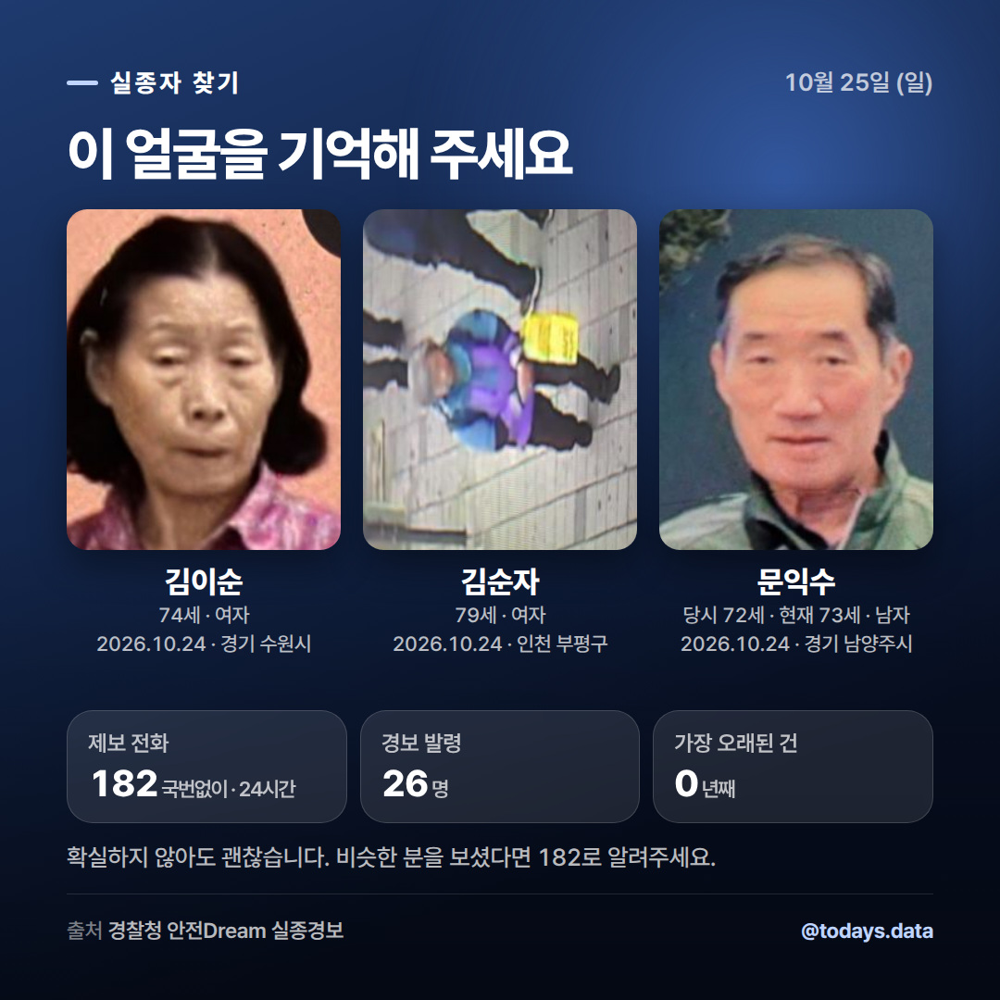

10월 25일 · 이미지를 길게 눌러 저장하고, 캡션은 복사 버튼으로

🔎 실종경보가 발령된 26명을 찾고 있습니다 · 김이순 (74세, 여자) — 2026.10.24 경기 수원시 · 김순자 (79세, 여자) — 2026.10.24 인천 부평구 · 문익수 (당시 72세 · 현재 73세, 남자) — 2026.10.24 경기 남양주시 혹시 보신 적 있으신가요? 확실하지 않아도 괜찮습니다. · 제보 전화 : 국번없이 182 (24시간) · 안전Dream : www.safe182.go.kr 한 번의 공유가 가족에게 돌아가는 길이 됩니다. 📊 자료 출처: 경찰청 #실종자찾기 #실종경보 #182 #안전드림 #함께찾아요 #공유부탁드립니다 #실종아동 #치매어르신 #공공데이터 #오늘의데이터